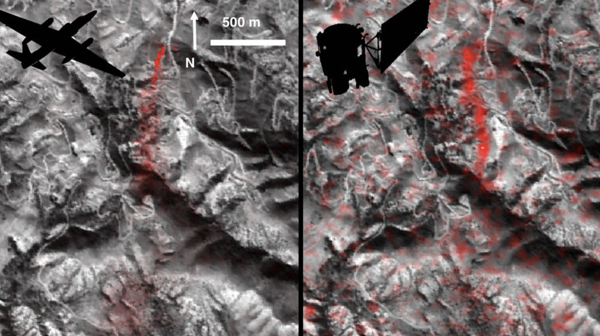

Fires, albedo, and CH4 emissions are tracked from space via satellites
We are already in an era where governments, companies, and individuals collect a massive amount of information from space. The number of satellites in orbit is immense and growing daily.
In the future, our eyes-in-the-sky will have even more capabilities: infrared sensors and the ability to capture higher-resolution images of areas deemed interesting. These capabilities will be used to detect critical problems early:
- Wildfire detection is a service already being piloted by Fireball, Ororatech, and others. Companies like OverStory are applying satellite imagery to monitor vegetation for utilities to assist with prevention.
- Albedo, a measure of how much solar radiation is reflected back to space, has been monitored via satellite by NASA for many years. These measurements are increasingly important for studying the rate of climate change.
- Methane and other GHG emissions are increasingly being tracked from space. Government agencies, including the European Space Agency, collect data for environmental studies while NGOs, like MethaneSat and Carbon Mapper, promise to catch polluters. A host of private companies, including GHGSat, Bluefield, and Kayrros offer services to detect methane leaks from wellheads or industrial areas.
In the very near future, expect to see companies and environmental regulators adopt new tools for monitoring compliance, particularly in Europe.
Comparison of detected methane plumes over Aliso Canyon, California, acquired 11 days apart in Jan. 2016 by: (left) NASA's AVIRIS instrument on a NASA ER-2 aircraft at 4.1 miles (6.6 kilometers) altitude and (right) by the Hyperion instrument on NASA's Earth Observing-1 satellite in low-Earth orbit (>160 kilometers). Reproduced from NASA-JPL/Caltech/GSFC